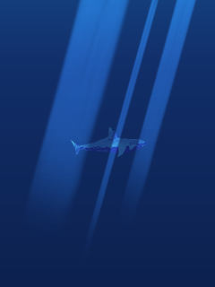
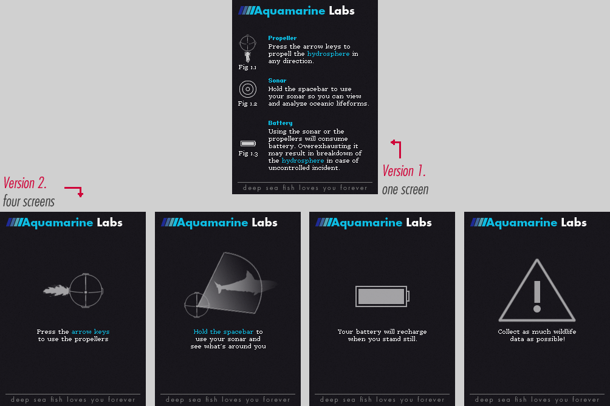

Compte-rendu de Ludum Dare #24
Après vous avoir fait faux-bond au Ludum Dare #23 qui a eu lieu en avril dernier, j'ai remis le couvert le mois dernier pour la 24ème édition de cet évènement si particulier. Pour ceux d'entre vous qui ne seraient pas familiers du principe et qui n'auraient pas lu mon compte-rendu de la 22ème édition (ou celui de la précédente), rappelons une fois de plus qu'il s'agit d'un weekend pendant lequel des développeurs du monde entier créent des jeux sur un thème imposé. Les participations peuvent se faire soit en 48 heures en solo (la compétition ou compo), soit en groupe en 72 heures (le jam).
L'avantage de participer pour la 3ème fois au Ludum Dare c'est que je commence à avoir mes petites habitudes, à commencer par les préparatifs du vendredi qui précède le début de la compétition :
- Création d'un projet vide prêt à recevoir graphismes et code
- Création d'une page web où héberger le jeu fini. J'y ai passé des plombes, c'est toujours difficile de choisir les couleurs d'une page web destinée à contenir un jeu pas encore crée.
- Des courses ! En plus du nécessaire à sandwiches, j'ai investi dans une montagne de cookies et dans une sélection de délicieuses bières locales (pour ceux qui ne suivent pas les articles — ou plutôt l'absence d'articles — taggés « ma vie », rappelons que je suis toujours en Angleterre). Je n'ai pas encore testé toute la gamme mais c'est en bonne voie. Par contre, il me reste plein de cookies.
- N'ayant pas écrit de musique depuis environ 6 mois, je suis allé faire un tour sur Youtube pour regarder quelques tutoriaux sur Reason (le logiciel que j'utilise pour faire de la musique) histoire de me remettre dans le bain. Il s'avère qu'une nouvelle version du logiciel était sortie entre temps, j'ai bien fait de me mettre un peu à jour =)
Le thème de cette édition, annoncé tard dans la soirée (2 heures du matin), était « évolution ». Comme toujours, un grand mouvement de panique a suivi (et pas seulement sur le canal IRC #LD48 dédié). Après avoir envisagé dans un premier temps un jeu dans lequel la technique et les features auraient évolué au fur et à mesure de la progression (ce qui a finalement été fait dans Evoland de Nicolas Canasse), je me suis dit que j'allais plutôt faire un jeu dans la veine de Space Station Silicon Valley sur Nintendo 64. L'idée de base était de faire un jeu dans lequel le joueur aurait incarné une bactérie dans un univers futuriste pollué et utilisé des déchets radioactifs pour évoluer de bestiole en bestiole et résoudre des puzzles. Étant donné que tout cela n'avait aucune chance d'être fait en 48 heures, j'ai réduit le concept à des espèces sous-marines et vues de côté pour diminuer un peu l'échelle. Ça reste un plan d'action complètement irréaliste mais au moins c'était un point de départ.
J'ai ensuite passé ma soirée/nuit à faire des petits poissons sous Photoshop (ainsi qu'un baril radioactif et un joli dégradé de 2000 pixels de haut dont nous reparlerons plus tard). Avant d'aller me coucher, j'avais ceci :

Le jeu final ressemble vaguement à ça mais avec le recul je trouve que ce mockup était plus joli (avec son échelle vue de loin).
Le lendemain matin (c'est-à-dire le lendemain midi), j'ai ouvert les yeux et je me suis rendu compte (comme à chaque fois) que je n'aurais jamais le temps de coder mon idée de départ. S'en est suivie une heure de réflexion pour tenter de répondre à la question « Bon alors, qu'est ce que je peux faire comme jeu avec des poissons et un baril radioactif tout en respectant le thème de la compétition ? ». Si cela vous rappelle mon compte-rendu précédent, c'est normal. Ma réponse à cette question est le concept que j'ai finalement implémenté : le joueur joue un robot d'exploration sous-marine chargé de collecter des données sur les espèces océaniques. Ça tenait à peu près la route, j'ai donc passé la journée du samedi à coder tout ça. Je suis finalement allé me coucher quand mon ordinateur s'est éteint sans prévenir et a refusé de se rallumer.
Je me suis demandé si je n'allais pas devoir finir mon jeu au bureau (il était versionné via SVN donc je ne risquais pas de perdre les données) mais j'ai finalement réussi à redémarrer ma machine après l'avoir ouverte et dépoussiérée un peu. Je crois que le dimanche a été ma journée préférée, comme à chaque édition du Ludum Dare. Une fois arrivé à ce stade, le jeu marche à peu près et il s'améliore à vitesse grand V en rajoutant de la musique, des sons et pleins de petits détails visuels. En plus, j'ai toujours l'impression de piloter un vaisseau spatial quand je compose de la musique.
Une fois mes finitions effectuées, ce qui nous amène au milieu de l'après-midi, j'ai fait tester le jeu à quelques heureux cobayes. Pour une fois, ils n'ont pas trouvé trop de bugs mais on fait des suggestions qui m'ont beaucoup aidé. J'ai ainsi ajouté un indicateur de progression dans l'interface et complètement repensé le tutorial qui est passé de « un écran plein de texte » à « 4 écrans avec une grosse icône et un peu de texte ». Je pense qu'il est un peu moins rebutant qu'il ne l'était au départ.

Un (gros) problème que ni moi ni les testeurs n'avions repéré est le fait que le jeu rame sur beaucoup de PC, ce qui n'aurait pas été bien difficile à corriger (par exemple en n'affichant pas un gros dégradé de 2000 pixels de haut semi-transparent par dessus le jeu).
Au final, j'ai terminé mon jeu plusieurs heures avant la deadline. Je pense que j'aurais dû en profiter pour ajouter d'autres espèces de poissons mais je ne voulais pas modifier la répartition des espèces en fonction de la profondeur (qui n'est de toute façon pas très bien équilibrée). Les avis sur le site du Ludum Dare sont plus positifs que la dernière fois et je pense avoir globalement fait un meilleur jeu. Si vous voulez y jouer, c'est par ici.
Pour finir, quelques menues anecdotes sur le jeu :
- Le titre du jeu, Deep Sea Fish Loves You Forever, est une référence pas très discrète au remix Goodbye Thinker de Jillian Aversa et Mattias Häggström Gerdt.
- La société "Aquamarine Labs" a été nommée en référence à Ecco The Dolphin et en pensant très fort à Aperture Science.
- La fumée des réacteurs du robot est faite en particules plutôt qu'animée à la main (pour gagner du temps). Les explosions des mines aussi mais c'est moins surprenant.
- Les claves dans la musique du jeu sont une référence (un peu plus subtile cette fois-ci) à The Future Sound of London dont c'est un peu la signature.
Ajouter un commentaire
Commentaires

Je viens de voir sur Steam que Evoland est désormais en vente, une version 'complète' sur steam. Comme quoi une victoire au Ludum Dare peut rapporter gros à certains.
Ereinion
Super cool ! Faut vraiment que je tente LD dans l'année, quand je serai plus experimenté en JS/Canvas. Sympa de relire des articles de Fil :)
très reussi bravo !
Deep sea fish loves me forever! :p
http://imgur.com/3XVhq

@anonyme > En général les jeux du LD48 jouables sur navigateur rencontrent un public plus large, mais ils ne sont pas mieux notés pour autant. Je pense que le plus important est de choisir une technologie dont tu es familier.
@Lyonsbanner > Merci! La démo avec la raie manta devait être enfouie loin dans mon subconscient, je l'avais complètement oubliée. Pour le reste je crois que je pensais plus à Pokémon (et au Pokédex) qu'à Metroid Prime ou Trauma Center mais les ressemblances sont bien là!

C'est classe ! Un peu court comme jeu… mais classe ;)
En y jouant, ça m'a rappelé certaines références que j'ai en tête : — L'environnement me fait penser à la Raie manta de Demo 1 sur PS1. — Le système du sonar qui révèle les poissons est très similaire au sonar dans Trauma center. — Et le système d'analyse est semblable aux scans qu'effectue Samus Aran dans Metroid Prime afin d'en savoir plus sur la faune et la flore.
Et félicitation pour ta médaille de bronze dans la catégorie "Coolness".
Très chouette monsieur, et vachement maîtrisé pour un jeu fait en si peu de temps. En plus tu donnes super envie de participer.-
Tu conseilles vraiment un framework capable d'afficher un jeu sur navigateur pour le Ludum dare ?